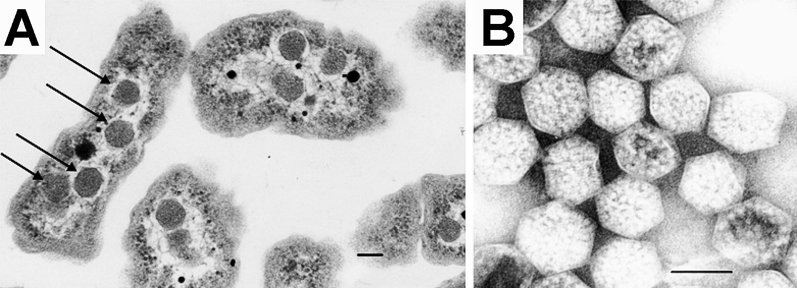

carboxysome
A bacterial microcompartment — a polyhedral, selectively permeable protein shell about 100–200 nm across — that encapsulates RuBisCO and carbonic anhydrase to concentrate CO2 around RuBisCO in cyanobacteria and many chemoautotrophs. Alpha-carboxysomes (cso genes) and beta-carboxysomes (ccm genes) evolved their shells and scaffolds independently. [DOI:10.1038/nrmicro.2018.10]

NCBITaxon:927) · Tsai Y, Sawaya MR, Cannon GC, Cai F, Williams EB, Heinhorst S, Kerfeld CA, Yeates TO; CC BY 3.0, via Wikimedia Commons · CC_BY_3_0 · source: WIKIMEDIA_COMMONS File:Carboxysomes_EM.jpg (M4508748) · DOI:10.1371/journal.pbio.0050144Synonyms: polyhedral body
Xrefs: uniprot.location:SL-0034
Components
| Component | Type | Grounding | Genes | Stoichiometry | Essential | Role |
|---|---|---|---|---|---|---|
| BMC-H shell hexamers (CcmK / CsoS1) | PROTEIN | ccmK, csoS1 | ESSENTIAL | Tile the shell facets; central pores admit bicarbonate and RuBP.
| ||
| BMC-T shell pseudohexamers (CcmO, CcmP) | PROTEIN | REVIEWED_LABEL_ONLY | ccmO, ccmP | CONDITIONAL | Tandem-BMC-domain paralogues that tile the shell alongside the BMC-H hexamers. Essentiality differs within the set and the field carries the weaker value: UniProt states CcmO is required for carboxysome formation and for recruiting CcmK2, while CcmP is a gated dimer of stacked trimers thought to control metabolite passage rather than to be required for assembly.
| |
| BMC-P shell pentamers (CcmL / CsoS4) | PROTEIN | ccmL, csoS4A | ESSENTIAL | Cap the vertices of the icosahedral shell.
| ||
| ribulose-1,5-bisphosphate carboxylase/oxygenase (form I) | PROTEIN_COMPLEX | rbcL, rbcS, cbbL, cbbS | ESSENTIAL | Encapsulated cargo; fixes CO2 into 3-phosphoglycerate.
| ||
| carboxysomal carbonic anhydrase (CcaA / CsoSCA) | PROTEIN | ccaA, csoSCA | ESSENTIAL | Dehydrates bicarbonate to CO2 inside the shell.
| ||
| cargo scaffold (CcmM / CsoS2) | PROTEIN | ccmM, csoS2 | ESSENTIAL | Links RuBisCO to the shell and drives cargo condensation.
| ||
| assembly adaptor CcmN | PROTEIN | REVIEWED_LABEL_ONLY | ccmN | ESSENTIAL | Bridges cargo to shell: its N-terminus binds the CcmM scaffold, which itself binds RuBisCO, while its C-terminal 18 residues bind the shell protein CcmK2.
| |
| carboxysome positioning system (McdB, with the McdA ATPase) | PROTEIN | REVIEWED_LABEL_ONLY | mcdB | DISPENSABLE | Distributes carboxysomes along the nucleoid. McdB binds the carboxysome and, with the McdA ATPase, sets spacing, size and inheritance; without the system carboxysomes aggregate rather than failing to form.
|
Taxonomic distribution
NCBITaxon:1117Cyanobacteriota — UNIVERSAL: Cyanobacteria. Beta-carboxysomes in most lineages; alpha-carboxysomes in marine Prochlorococcus and some Synechococcus. [DOI:10.1128/MMBR.00061-12]NCBITaxon:1224Pseudomonadota — VARIABLE: Alpha-carboxysomes in many chemoautotrophs (Halothiobacillus, Thiomicrospira, Nitrosomonas). [DOI:10.1128/MMBR.00061-12]
Canonical examples
NCBITaxon:1140Synechococcus elongatus PCC 7942 — Model for beta-carboxysomes. [DOI:10.1128/MMBR.00061-12]NCBITaxon:927Halothiobacillus neapolitanus — Model for alpha-carboxysomes. [DOI:10.1128/MMBR.00061-12]
Functions
- carbon dioxide concentrating mechanism — Raises the CO2 concentration at RuBisCO and limits O2 access, suppressing photorespiration.
DOI:10.1038/nrmicro.2018.10Kerfeld et al. 2018.
- carbon fixation
GO:0015977DOI:10.1128/MMBR.00061-12Rae et al. 2013.
Associated traits
- CONFERS
traitmech:000072carboxysome — TraitMech models carboxysome possession as a morphology trait; this record models the organelle.
Physical properties
- DIAMETER: 100-200
UO:0000018[DOI:10.1038/nrmicro.2018.10]
Mechanism graphs
The shell and carbonic anhydrase concentrate CO2 at RuBisCO (FUNCTION)
| Subject | Predicate | Object | Evidence |
|---|---|---|---|
| carboxysome shell | permits passage of | bicarbonate |
|
| carbonic anhydrase | converts | bicarbonate |
|
| carbonic anhydrase | elevates local concentration of | carbon dioxide |
|
| carboxysome shell | prevents loss of | carbon dioxide |
|
| carbon dioxide | substrate of | RuBisCO |
|
| RuBisCO | catalyses RO:0002327 | carbon fixation |
|
Cargo condenses on a scaffold, an adaptor recruits the shell, and the shell closes around it (ASSEMBLY)
Beta-carboxysome assembly order, and the placement step that follows it.
| Subject | Predicate | Object | Evidence |
|---|---|---|---|
| CcmM scaffold | binds | RuBisCO |
|
| CcmM scaffold | forms | pre-carboxysome cargo condensate |
|
| CcmN adaptor | bridges | CcmM scaffold |
|
| CcmN adaptor | recruits | BMC-H shell hexamers |
|
| BMC-T shell pseudohexamers (CcmO, CcmP) | recruits | BMC-H shell hexamers |
|
| BMC-H shell hexamers | forms | carboxysome shell |
|
| BMC-T shell pseudohexamers (CcmO, CcmP) | forms | carboxysome shell |
|
| carboxysome shell | encapsulates | pre-carboxysome cargo condensate |
|
| McdB positioning system | drives | carboxysome spacing along the nucleoid |
|
Discussions
- CURATION_TODO (RESOLVED): Should the RuBisCO assembly chaperone RbcX (Q31N04) be a carboxysome component? The UniProt Subcellular Location seeding reported RbcX as annotated to the carboxysome with no matching component. It is an RbcL-specific folding chaperone whose homodimer binds the exposed C-terminus of an RbcL monomer during assembly; it is not part of the assembled structure. Recording the decision so the next seeding run does not re-raise it.
Evidence
DOI:10.1038/nrmicro.2018.10Kerfeld et al. 2018, "Bacterial microcompartments".DOI:10.1038/nrmicro1913Yeates et al. 2008, "Protein-based organelles in bacteria".DOI:10.1128/MMBR.00061-12Rae et al. 2013, "Functions, compositions, and evolution of the two types of carboxysomes".
Curation history
2026-08-29T00:00:00Zclaude · CREATED_RECORD — Drafted from the cited reviews, aligned with the TraitMech carboxysome trait record (traitmech:000072). Not yet human-reviewed.2026-08-29T01:00:00Zclaude · FIX_REVIEW_FINDINGS — PR #1 review: NCBITaxon:1117 label updated to the current name Cyanobacteriota (#5).2026-08-29T02:00:00Zclaude · ADD_IMAGE — Added Commons image File:Carboxysomes_EM.jpg (CC BY 3.0, Tsai et al. 2007 DOI:10.1371/journal.pbio.0050144, NCBITaxon:927) as the #15 canary; licence, attribution and taxon verified against the Commons/Wikidata APIs at retrieval.2026-08-30T02:14:16Zuniprot_sl · SEED_PROTEIN_EXAMPLES — Added 8 taxon-paired protein example(s) from UniProtKB reviewed entries annotated to SL-0034 (Carboxysome), matched to components by gene symbol, each carrying UniProt's ECO:0000269 PubMed evidence for the localisation.2026-08-30T02:14:17Zuniprot_sl · ADD_UNIPROT_SL_XREF — Added uniprot.location:SL-0034 (Carboxysome); mapping read from the GO line of UniProt subcell.txt.2026-08-30T19:08:31Zfetch_commons_image · ADD_IMAGE — Updated Commons image File:Carboxysomes_EM.jpg (CC_BY_3_0, Halothiobacillus neapolitanus); licence, attribution and taxon read from the Commons and Wikidata APIs at retrieval.2026-08-30T19:11:11Zfetch_commons_image · ADD_IMAGE — Updated Commons image File:Carboxysomes_EM.jpg (CC_BY_3_0, Halothiobacillus neapolitanus); licence, attribution and taxon read from the Commons and Wikidata APIs at retrieval.2026-08-30T19:19:18Zclaude · ADD_COMPONENTS — Added the components the UniProt SL seeding found unmatched (#40): BMC-T shell pseudohexamers (CcmO, CcmP), the CcmN assembly adaptor, and the McdB positioning system, each with the papers UniProt attributes the claim to. Declined RbcX with a recorded reason: it is a RuBisCO folding chaperone, not part of the assembled structure.2026-08-30T19:19:33Zuniprot_sl · SEED_PROTEIN_EXAMPLES — Added 4 taxon-paired protein example(s) from UniProtKB reviewed entries annotated to SL-0034 (Carboxysome), matched to components by gene symbol, each carrying UniProt's ECO:0000269 PubMed evidence for the localisation.2026-08-31T04:03:50Zclaude · ADD_ASSEMBLY_GRAPH — Review of PR #60: added the ASSEMBLY graph the new components belonged in (#67) — cargo condensation on CcmM, CcmN bridging cargo to shell, CcmO recruiting CcmK2, shell closure, and McdB-driven spacing — and stated in the bmc_t role that essentiality differs between CcmO and CcmP (#68).2026-08-31T04:09:18Zclaude · ADD_TRAIT_EVIDENCE — TraitLink.evidence became required in the schema; cited the review already backing the record for the carboxysome trait link.2026-08-31T06:12:34Zclaude · SET_COMPONENT_ROLE — component_role became required (#77) so the constituent/machinery distinction is machine-readable rather than prose. Set per component; ASSOCIATED_MACHINERY only where the protein acts on the already-assembled structure.